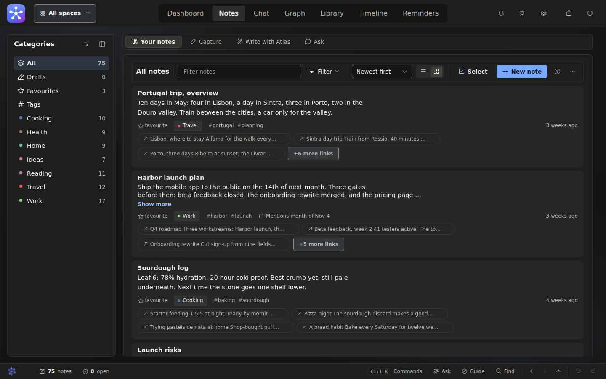

Notes
Write in fragments, find it organised.
A loose thought lands next to its neighbours: filed into a category, tagged, and linked to what it relates to.
- Rename, merge, split and move categories, each step undoable
- Pins, threads, attachments, revision history and a recycle bin
- Search that understands tags, exact phrases and exclusions

